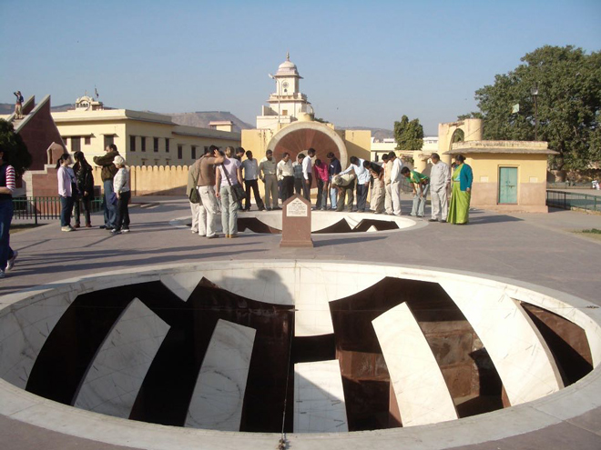
.
Jaipur also has a Jantar Mantar, the name of which is derived from the Sanskrit yanta mantr (meaning 'instrument of calculation'). It was begun by Jai Singh in 1728 who was keen to measure time by the sun falling on huge sundials and charting its annual progress through the zodiac.
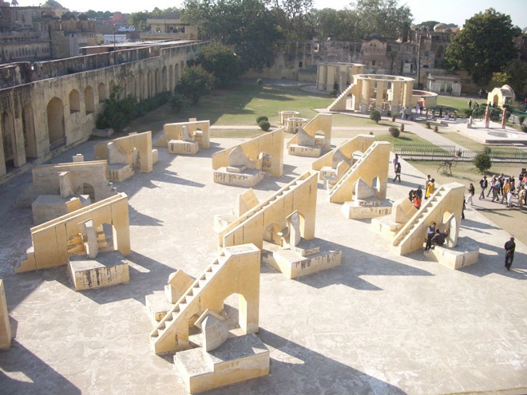
Jai Singh liked astronomy even more than he liked war and town planning. Before constructing the observatory, he sent scholars abroad to study foreign constructs.
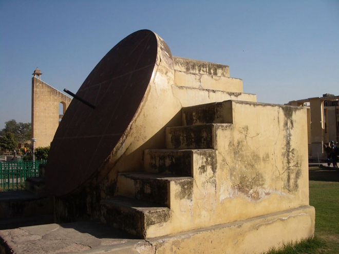
Jai Singh built five observatories in total: this is the largest and best preserved (it was restored in 1901). Others are in Delhi, Varanasi and Ujjain. The fifth, the Mathura observatory, has disappeared.
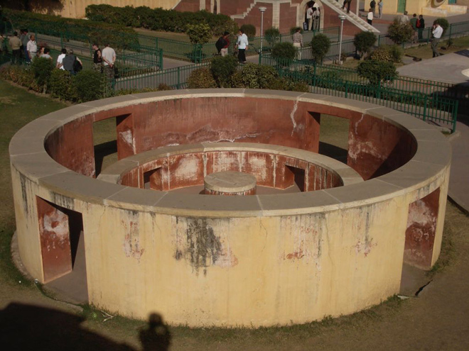
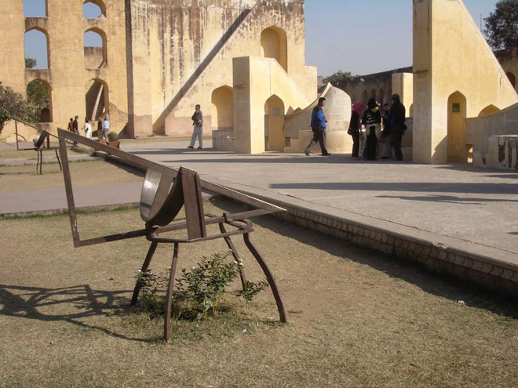
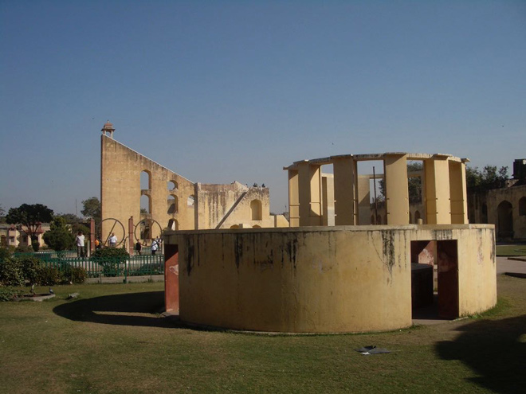
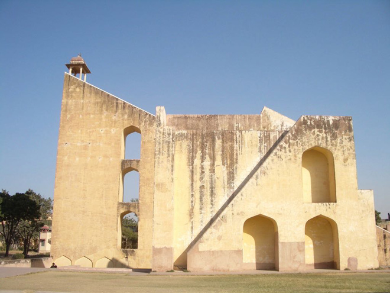
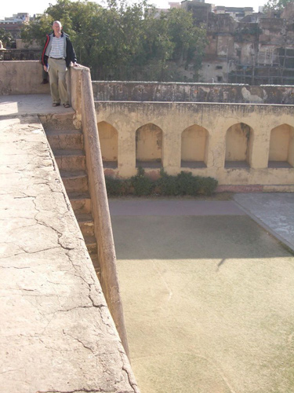
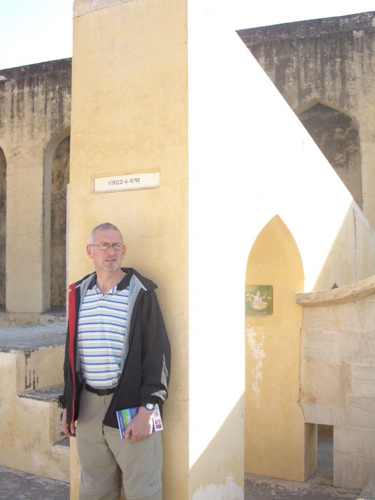
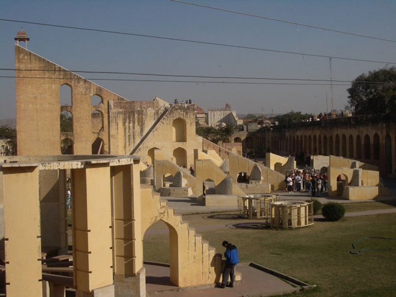
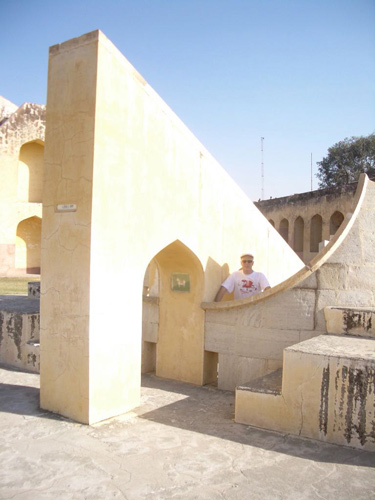
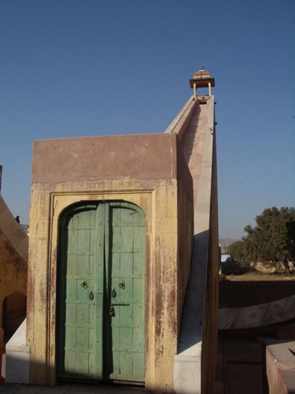
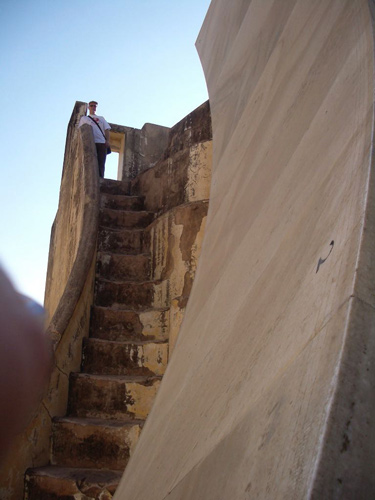
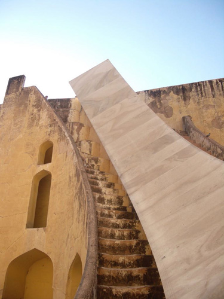
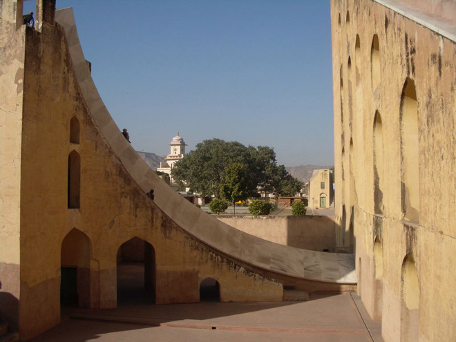
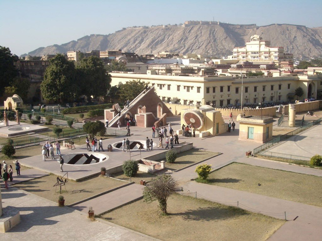
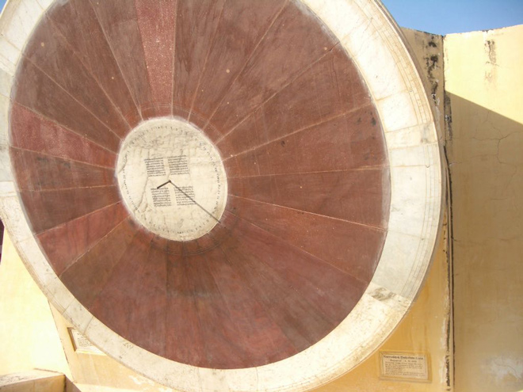
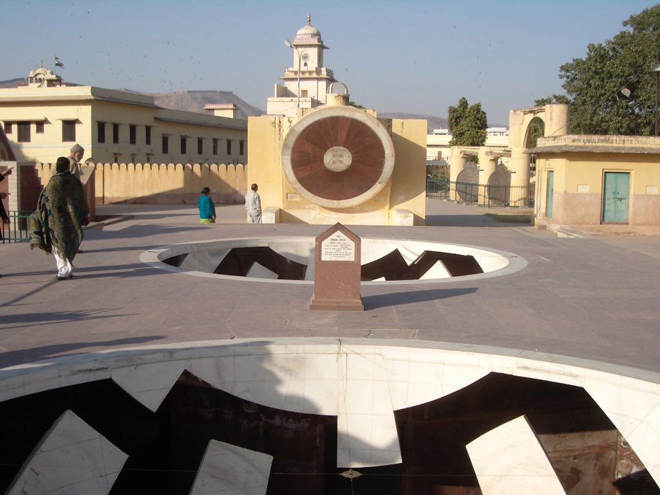
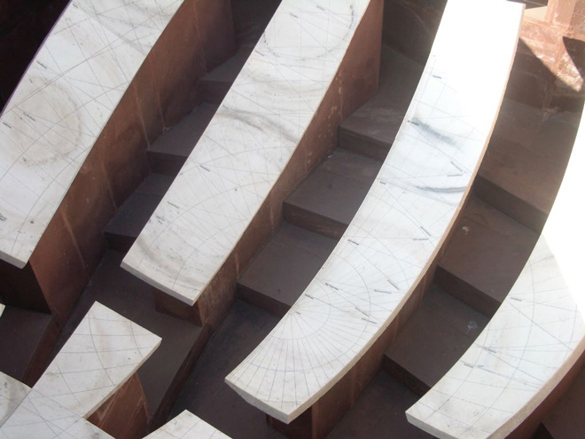
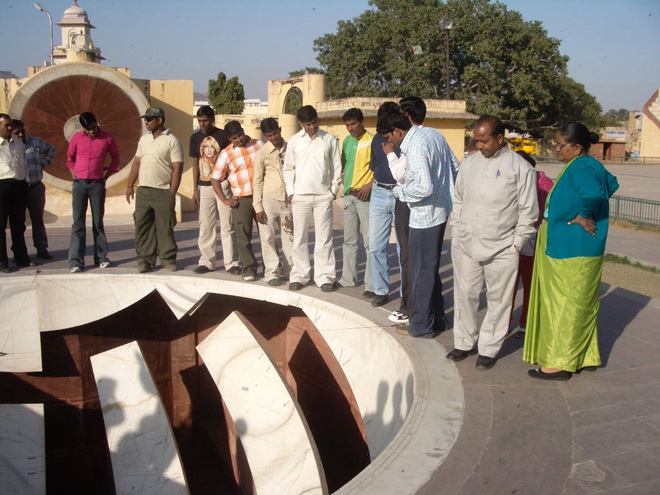
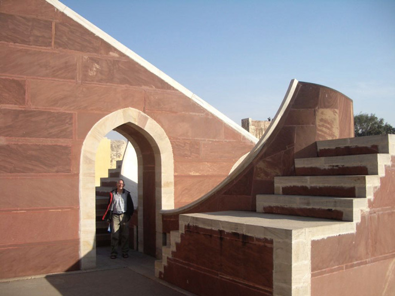
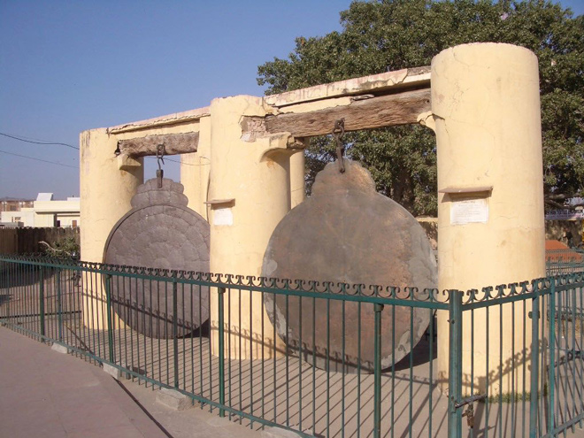
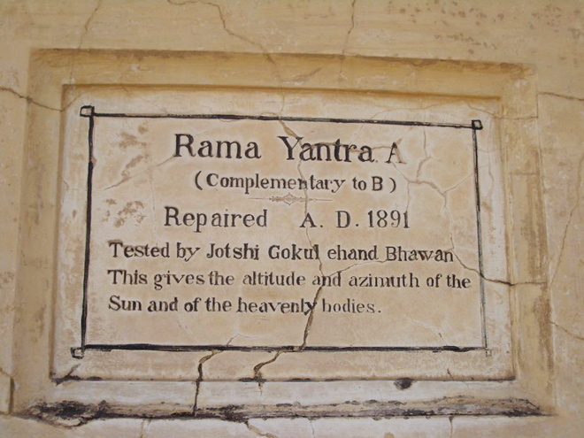
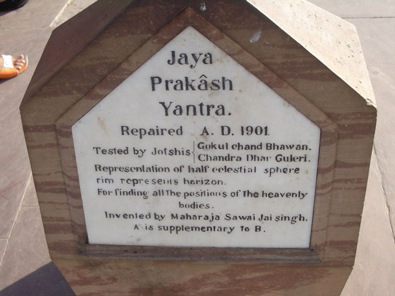